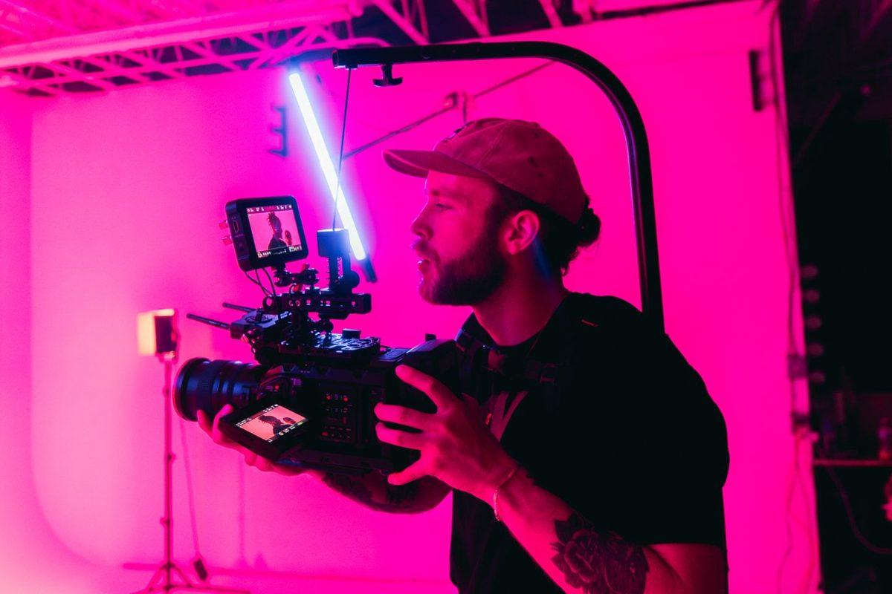

Video

01
Video & film
Van concept en script tot opname, montage en kleurcorrectie. Films die je verhaal in korte tijd voelbaar maken.
- Bedrijfs- en merkfilms
- Commercials
- Aftermovies
- Korte social video’s